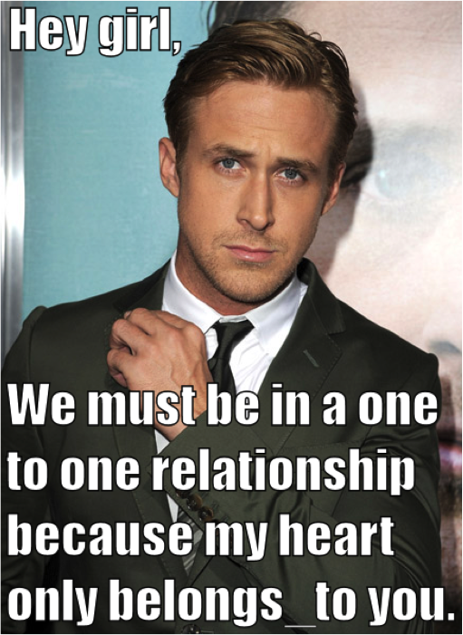

The Road Ahead
Making Active Record Your New Best Friend
What is Active Record?
Active Record is what's called an object-relational mapper (ORM). In essence it acts as a go between or bridge between your app's objects and the database.

Why is it useful?
As fun as writing SQL can be, ActiveRecord's special syntax enables you to avoid having to write complicated queries. Instead it translates this syntax into the SQL for you.*
How do I use it in my Rails app?
- ActiveRecord is a gem that is included by default when you create a new Rails project
- In order to set up the connections between different tables in the app's database, you need to specify relationships
- You do this in your model and migration files
- These relationships enable you to use ActiveRecord to access say, the orders of a particular user, or even a more complex query like totalling up the profit made on orders where the product had the word "green" in its title somewhere
Basic Active Record Relationships
one-to-one, one-to-many, many-to-many
One to One
- The table of the belongs_to model contains a column with the foreign key (often id) of the has_one model
- Not always clear when to use one
- Users and social media profiles
- A user only has_one Facebook profile, and that profile only belongs_to that user
One to Many
- Very common
- Like one to one, the table of the belongs_to model contains a column with the foreign key (often id) of the has_many model
- Users and orders
- A user has_many orders, and each order only belongs_to that user
Many to Many
- Also very common
- Movies and genres
- Genres can contain many movies, and those movies can belong to many genres
- Join table contains the foreign keys (ids) of what's connected to it
- Two ways of describing the relationship
- has_many JOINTABLE & has_many OTHERTABLE through JOINTABLE
- has_and_belongs_to_many (Rails/ActiveRecord magic creates the join table)
t.what_now?
- t.belongs_to, t.references, and t.integer
- Everyone has their own preference, but any of these will work
t.belongs_to :usert.references :usert.integer :user_id- Note: when you use t.integer you need to specify the id because integer just means a number
- With t.belongs_to or t.references the Rails/ActiveRecord magic can safely assume what you mean